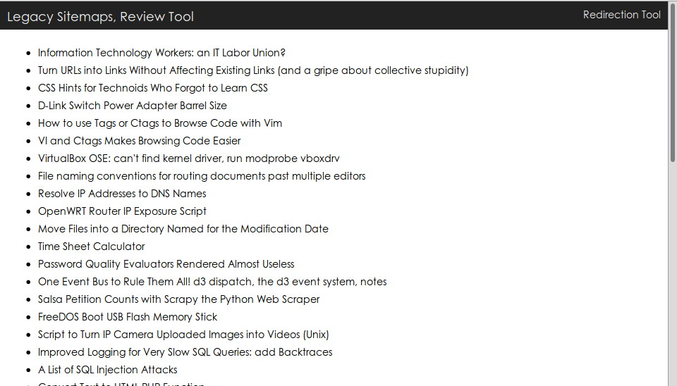
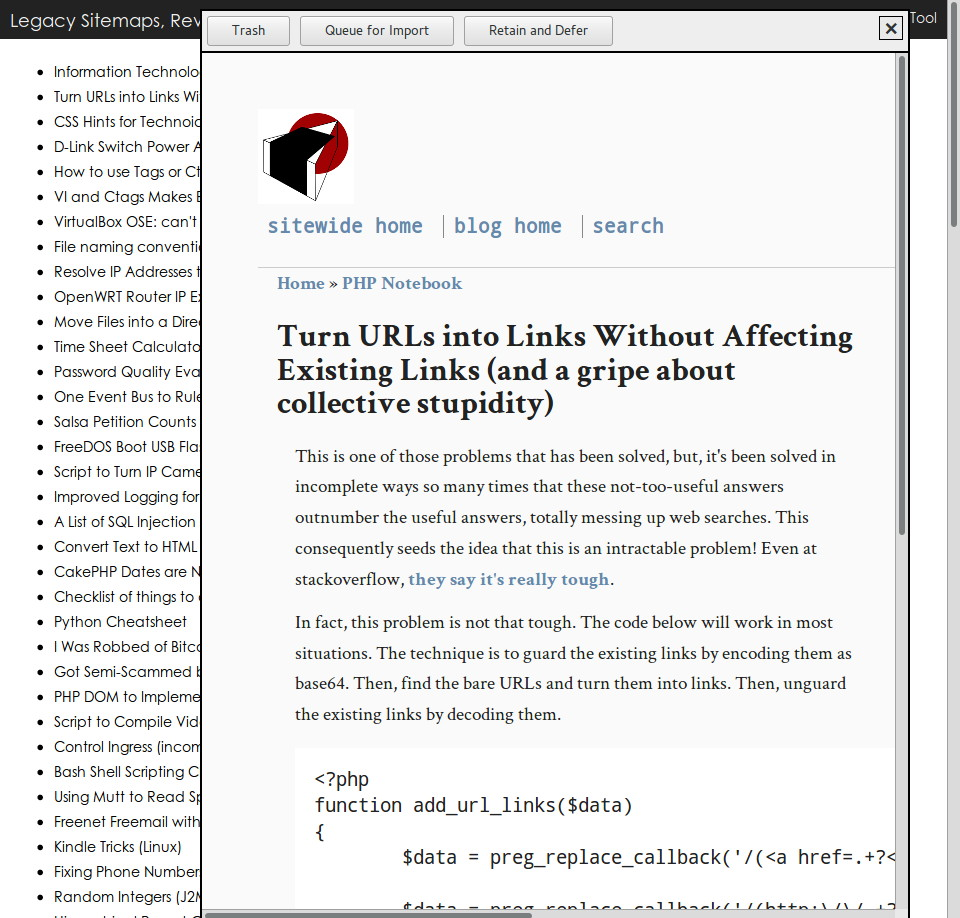
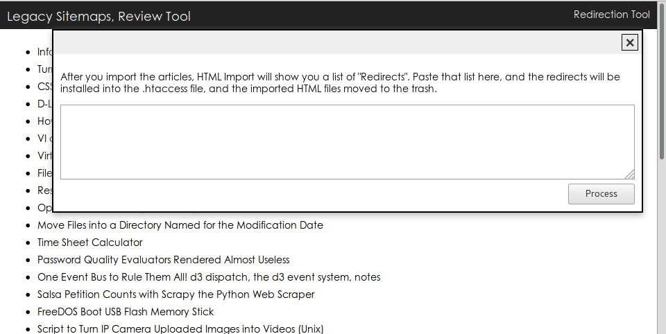

This is a tool to help you migrate a static, HTML file website into a CMS, without importing everything. You can re-read each article to determine if it's worth importing.
It's designed to work with HTML Importer 2, for WordPress, but can work with other software.
It also helps you stay in the search engines, by producing a sitemap linking to all your legacy content.
After importation, the tool helps create mod_rewrite RewriteRules and inserts them into an .htaccess file, so the old URLs redirect to the new URLs.
  This tool was made with the Slim Framework and ReactJS. This site uses Milligram CSS.